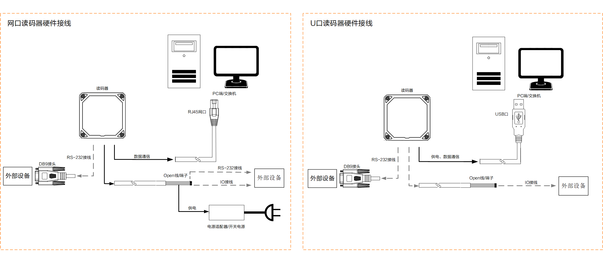
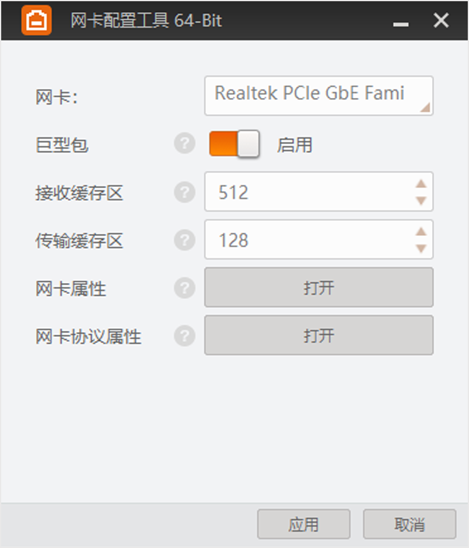
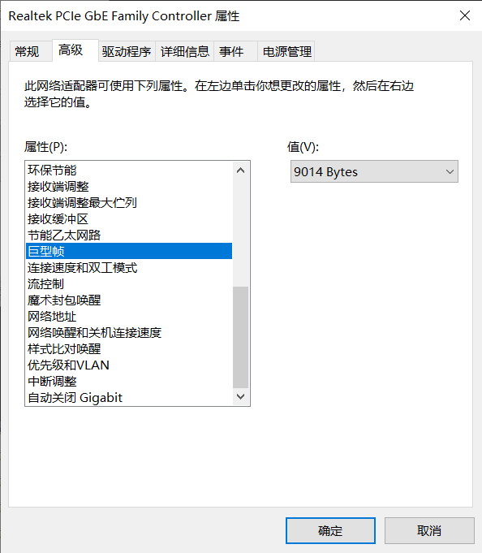
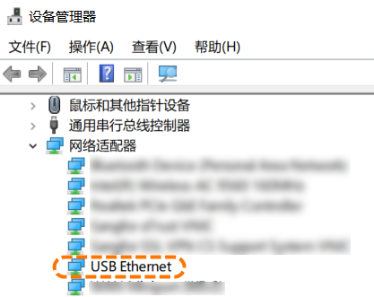

为了保证您能够顺利连接读码器并正常使用客户端功能，请先确保运行环境符合要求，之后需要完成读码器的硬件接线并进行必要的环境配置。
对安装客户端的PC配置有以下要求。
操作系统：Windows7/10（32/64位中、英文操作系统）、Windows11（64位中、英文操作系统）
CPU：Intel Pentium IV 2.0 GHz
内存：1 GB
网卡：推荐使用Intel Pro1000，I210和I350系列的网卡
屏幕分辨率：1366×768分辨率
操作系统：Windows7/10（32/64位中、英文操作系统）、Windows11（64位中、英文操作系统）
CPU：Intel Pentium IV 3.0 GHz或以上
内存：4 GB或更高
网卡：推荐使用Intel Pro1000，I210和I350系列的网卡
屏幕分辨率：1920×1080或更高分辨率
客户端已集成硬件所需驱动，无需下载安装其他驱动。
客户端运行依赖系统盘，需确保系统盘空间未被完全使用。
不排除未知杀毒软件将客户端识别为病毒。为方便使用，建议将客户端加入该杀毒软件的白名单或关闭电脑上的杀毒软件。对于360安全卫士建议关闭。
在使用读码器之前，需完成读码器硬件接线，主要涉及供电、数据通信、I/O及RS-232串口相关接线。读码器根据数据接口不同，可分为网口和USB口类型，在接线时也对应存在差异。

供电：网口读码器可将出厂配套线缆端子或Open线的VCC和GND管脚接入合适的电源适配器或工业开关电源实现供电；USB口读码器可将出厂配套线缆的USB接口接入PC的USB接口实现供电。
不同型号的读码器出厂配套线缆间存在差异，具体操作请查看对应型号读码器的硬件用户手册。
数据通信：网口读码器可将出厂配套线缆的RJ45端口接入PC或交换机对应网口实现数据通信；USB口读码器将出厂配套线缆的USB接口接入PC的USB接口实现数据通信。
（可选）I/O接线：网口读码器如需使用IO功能，可通过出厂配套线缆端子或Open线的其他管脚连接外部设备；USB口读码器如需使用IO功能，可采购选配线缆，通过线缆端子或Open线的管脚连接外部设备。
不同型号的读码器相关线缆间存在差异，具体线序说明和操作请查看对应型号读码器的硬件用户手册。
（可选）RS-232接线：网口读码器如需使用串口功能，可通过出厂配套线缆的DB9接头或Open线进行接线；USB口读码器如需使用串口功能，可采购选配线缆，通过线缆的DB9母头进行接线。
DB9母头串口的具体线序说明和操作请查看对应型号读码器的硬件用户手册。
为保证数据传输的稳定性，网口设备需对防火墙及PC网络进行设置，U口设备需确认驱动的正常安装。
网口读码器：通过客户端使用前需确保PC和设备的IP地址处于同一个局域网，且PC的网口已开启巨帧。
打开网卡配置工具，工具界面如下图所示。您有以下两种方式打开该工具：
在IDMVS安装路径下找到NIC_Configurator并打开。相对路径为：.\Applications\Win64\NIC_Configurator。
在设备列表，右键单击GigE，并选择网卡属性设置。

在网卡处选择对应的网卡。
对该网卡的以下参数进行设置。
为TCP/IP数据包开启巨型包功能。若大数据包占据了大部分流量并且用户可以接受延时，巨型包可以减少CPU使用率，从而提高数据传输效率。
若设置巨型包失败，可以打开，确认属性中是否包含巨帧数据包或巨型帧参数。如有，则设置值为9 KB或9014 Bytes；如不包含，可通过更新网卡驱动或者更换网卡，查看是否包含巨帧相关参数。

在网卡属性符合要求的情况下，可以设置接收缓存区值的大小。接收缓存区数越大，接收性能越好，但同时会消耗系统内存。
在网卡属性符合要求的情况下，可以设置传输缓存区值的大小。传输缓存区数越大，传输性能越好，但同时会消耗系统内存。
查看或更改网卡的配置选项。其中一些选项由设备制造商设置，不允许更改。
查看或更改PC的IP地址。
U口读码器：U口读码器需安装USB转网口驱动后才能被IDMVS发现并连接。
通过PC的USB接口连接U口设备。
Windows系统会自动检测到新的硬件设备并自动安装驱动。
（可选）进入PC的，检查驱动是否安装成功。

若驱动安装异常，如在其他设备下显示；或系统未检测到RNDIS驱动，可联系技术支持获取驱动并手动安装。